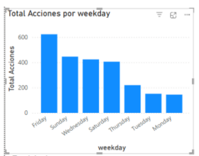
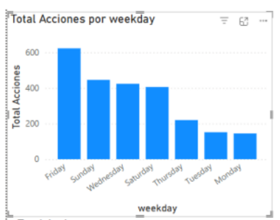

Sistema de Análisis y Recomendación de Cursos en MOOC
Informe Ejecutivo - Metodología CRISP-DM
1. Contexto y Problema Abordado
Objetivo del Proyecto
El objetivo principal fue aplicar la metodología CRISP-DM para transformar logs de interacción de estudiantes en métricas de engagement accionables, y construir un Datamart con estructura estrella que soporte un análisis descriptivo avanzado y un modelo de recomendación de cursos.
El Problema Resuelto
Las plataformas de e-learning se enfrentan a un desafío recurrente: la gran cantidad de datos de interacción (logs) que son difíciles de analizar directamente.
- Datos Crudos: Los registros son logs de comportamiento (implícitos) como play_video, pause_video, y timestamps.
- Métricas Ocultas: Era imposible medir la calidad del engagement o el patrón de estudio (ej., nocturno) sin una ingeniería de características previa.
- Modelo Estático: La actividad estaba concentrada en un único curso (course-v1:TsinghuaX+70800232X+2015_T2).
2. Estructura y Validación del Modelo
Modelo de Datos - Arquitectura Estrella
La arquitectura se basa en un Modelo Estrella que conecta la tabla central de hechos (fact_interaction) con cuatro dimensiones principales, optimizando las consultas analíticas.
13 tipos de interacción
1 curso único
Tabla Central de Hechos
59 estudiantes
168 fechas/horas
Figura 1: Diagrama del Modelo Estrella implementado en el sistema
| Dimensión | Descripción | Resultado Obtenido |
|---|---|---|
| Dimensión de Usuario (dim_user) |
Identifica a los 59 estudiantes únicos. | Se creó la clave user_key. |
| Dimensión de Curso (dim_course) |
Identifica el 1 curso único. | Se creó la clave course_key. |
| Dimensión de Acción (dim_action) |
Identifica los 13 tipos de interacción únicos. | Se creó la clave action_key. |
| Dimensión de Tiempo (dim_time) |
Almacena 168 fechas/horas únicas. | Se usó para calcular date, hour, y weekday. |
3. Resultados del Análisis Descriptivo
KPIs Principales

Figura 2: Visualización de los KPIs principales del sistema
Patrones de Comportamiento Detectados
Prioridad de Contenido
Actividad Horaria
La actividad máxima ocurre entre las 18:00 y las 23:00 (picos altos).
Actividad Semanal
El día más activo es el Viernes, seguido del Domingo y Miércoles.
 

Figura 3: Análisis de actividad por hora del día y día de la semana
Descripción de los Gráficos de Actividad
- Configuración: Eje X: hour (Hora del día), Eje Y: Total Acciones
- Utilidad: Visualiza los picos de demanda de la plataforma. Muestra claramente que la actividad máxima ocurre entre las 18:00 y las 23:00.
- Configuración: Eje X: weekday (Día de la semana), Eje Y: Total Acciones
- Utilidad: Identifica los días de mayor engagement para planificar actividades de contenido. Muestra que el Viernes es el día más activo.
Distribución de Acciones por Tipo
Las acciones dominantes en orden de frecuencia:
- play_video: 634 acciones
- pause_video: 572 acciones
- click_courseware: Tercer lugar
- load_video: Cuarto lugar
- click_info: Quinto lugar
Figura 4: Distribución del Total de Acciones por tipo de interacción del estudiante
- Configuración: Eje X: action (Tipo de interacción, ej. play_video), Eje Y: Total Acciones
- Utilidad: Determina el tipo de contenido que consume el usuario. Muestra que la interacción se concentra en play_video y pause_video, confirmando que el aprendizaje es principalmente visual.
4. Resultados del Engagement
Perfil del Usuario - Métricas Derivadas
Se utilizaron las medidas DAX creadas para calcular el Ratio de Acciones de Video y el Ratio Nocturno por usuario.
| Métrica Derivada | DAX Utilizado | Insight del Análisis |
|---|---|---|
| Video Action Ratio | DIVIDE([Total Acciones Video], [Total Acciones]) |
El promedio es del 37.6%. La distribución muestra muchos usuarios con consumo bajo (cerca del 0.0) y otros con consumo muy alto (hasta el 91.9%). |
| Night Ratio | DIVIDE([Total Acciones Noche], [Total Acciones]) |
Se identificaron múltiples usuarios con un ratio nocturno del 100%, lo que confirma un segmento de estudiantes que interactúa solo fuera del horario diurno. |
Tabla 1: Muestra de usuarios con sus métricas calculadas de Video Action Ratio y Night Ratio
Figura 5: Distribución del ratio de actividad nocturna por usuario (Top 10 usuarios con mayor night_ratio)
- Configuración: Eje X: Suma de night_ratio (Ratio Nocturno), Eje Y: user_key (Estudiante individual)
- Filtro: Las 10 user_key principales por night_ratio
- Utilidad: Segmenta a los usuarios por su patrón de estudio. Confirma la existencia de un segmento de estudiantes con un ratio nocturno del 100%, facilitando intervenciones personalizadas para este grupo.
Análisis por Curso
Todo el análisis descriptivo y de engagement (KPIs, ratios, etc.) se aplica únicamente a las 2,416 interacciones registradas para un solo curso.
Figura 6: Visualización del volumen total de interacciones y métricas por curso
- Configuración: Eje X: course_id (Identificador del curso), Barra Azul Oscura: Total Acciones (2,416 en total), Punto Azul Claro: Acciones por Usuario por Día (promedio calculado)
- Utilidad: Valida el alcance de los datos procesados. Confirma que todo el análisis descriptivo y de engagement (KPIs, ratios, etc.) se aplica únicamente a las 2,416 interacciones registradas para un solo curso.
Análisis Temporal (Mapa de Calor)
El mapa de calor permite identificar visualmente los momentos de mayor saturación en la plataforma, cruzando días de la semana con horas del día.
Figura 7: Mapa de calor de intensidad de uso (Día vs. Hora)
- El "Viernes Frenético": Se observa una concentración masiva de actividad los viernes por la tarde (pico de 130 acciones a las 17:00), sugiriendo cierres de ciclo semanal o fechas límite de entrega.
- Síndrome del "Estudiante Nocturno": Los domingos presentan un patrón opuesto: calma durante el día y una reactivación abrupta entre las 20:00 y 23:00 horas (procrastinación académica).
- Plataforma "After-Office": Las mañanas (06:00 - 12:00) muestran actividad casi nula, confirmando que el uso es predominantemente vespertino y nocturno.
Análisis de Comportamiento (Árbol de IA)
Utilizando Inteligencia Artificial para descomponer el total de acciones, se revela la estructura fundamental de la interacción del usuario y sus preferencias de navegación.
Figura 8: Desglose jerárquico de acciones por tipo y día
- Monopolio del Video: Las acciones relacionadas con el reproductor (play, pause, load, seek) dominan absolutamente la plataforma, sumando más de 1,590 interacciones.
- Interacción Limitada: Acciones de participación activa como create_comment o foros son marginales frente a la navegación pasiva. El usuario utiliza la plataforma como un servicio de streaming ("Netflix Educativo").
- Correlación Acción-Día: El desglose de la acción play_video confirma la tendencia semanal: el consumo de video es 5 veces mayor un viernes (167 reproducciones) que un jueves (33 reproducciones).
Caso de Uso: Planificación de Capacidad (Gestión de Recursos)
Este análisis demuestra cómo los datos visualizados se traducen en decisiones operativas para evitar saturaciones y optimizar la infraestructura.
Estrategia Operativa
Explicación del Caso con Gráficos
La estrategia se fundamenta en la correlación de dos visualizaciones clave del reporte:
Figura 3: Análisis de actividad por hora del día
Figura 4: Distribución del Total de Acciones por tipo de interacción del estudiante
5. Conclusiones y Futuro Trabajo
Resultados Obtenidos
El proyecto transformó logs brutos en un sistema de análisis dimensional, permitiendo la extracción de indicadores de alto valor como el Ratio de Acciones de Video y el Ratio Nocturno. Se validó que el engagement es alto en las noches y que se concentra en el consumo de video.
Impacto
La información visualizada en el Cuadro de Mando permite:
Gestión de Recursos
Planificar la capacidad del servidor en las horas pico (18:00–23:00).
Marketing/Contenido
Dirigir contenido nuevo o sesiones en vivo los viernes (día más activo).
Retención
Identificar usuarios con patrones de riesgo o alta afinidad (alta actividad nocturna) para intervenciones personalizadas.